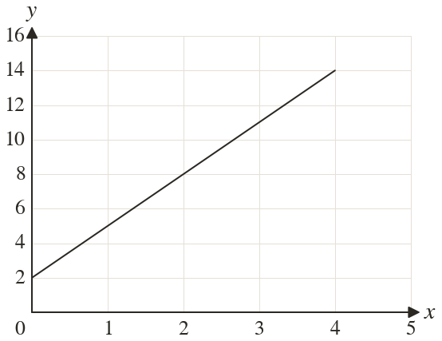
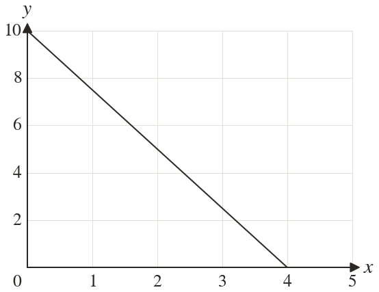

Westonbirt Maths · Distance-Time and Conversion Graphs
Finding Gradients
Name: ______________________ Date: ____________
1
Find the gradient of the line.
2
Find the gradient of the line.
3
A line passes through and Find its gradient.
4
A line passes through and Find its gradient.
5
A line passes through and Find its gradient.
Ext
A line through k) and has gradient
Find
Find

